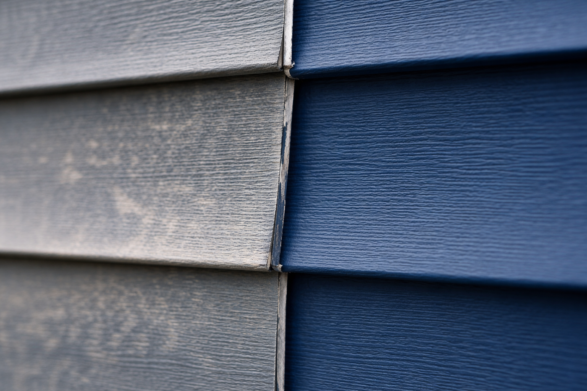

A major Midwestern hail storm rolls through Greendale. The next day, you see roofing contractors knocking on doors up and down the street. Your neighbor gets a brand new roof and new siding, telling you, "It only cost me my $1,000 deductible!"
But when you call your insurance company, you receive a check for $4,000 against a $15,000 estimate, and an adjuster telling you they will only replace the damaged panels on the south side of your home. What went wrong?
Trap #1: The "Siding Matching" Nightmare

The reality of a repair without "Matching Coverage": New siding (right) rarely matches the weathered, oxidized panels (left) of the same color.
Look at the image above. On the right, you see brand new vinyl siding. On the left, you see the exact same siding color—but after years of exposure to Wisconsin sun and snow, it has faded and oxidized. If a storm only damages one side of your house, most standard policies only pay to replace that specific side.
If your siding color has been discontinued, or if the remaining siding is simply too faded to match, you're left with a "patchwork quilt" house. Unless your policy includes a specific Matching of Undamaged Siding/Roofing Endorsement, you are forced to choose between a mismatched home or paying out of pocket to reside the rest of the house so it looks right.
Trap #2: The Actual Cash Value (ACV) Roof
To keep monthly premiums low, many "budget" policies include an Actual Cash Value (ACV) roof endorsement. In insurance terms, ACV means "Replacement Cost minus Depreciation."
If your roof was designed to last 30 years and a storm hits in year 20, an ACV policy only pays you for the 10 years of "life" left in those shingles. You are essentially paying for a brand new roof out of your own pocket while the insurance company only pays for the used portion. On a $15,000 roof, that could mean you're on the hook for $10,000 plus your deductible.
Are there hidden traps in your policy?
Send me a photo or PDF of your current homeowners declarations page. In 60 seconds, I can tell you exactly how your roof is valued and whether your house is protected against a mismatch disaster.
Request a Policy Review